Specification of the 3GPP Confidentiality and Integrity Algorithms 128-EEA3 and 128-EIA3 Document 2: ZUC Specification
General structure of the algorithm
ZUC has three logical layers, see the figure below. The top layer is a linear feedback shift register (LFSR) of 16 stages, the middle layer is for bit-reorganization ( BR), and the bottom layer is a nonlinear function F
General Structure of ZUC
The linear feedback shift register (LFSR)
The linear feedback shift register (LFSR) has 16 of 31-bit cells . Each cell is restricted to take values from the following set . The LFSR has 2 modes of operations: the initialization mode and the working mode
In the initialization mode, the LFSR receives a 31-bit input word u, which is obtained by removing the rightmost bit from the 32-bit output W of the nonlinear function F, i.e., u=W>>1. More specifically, the initialization mode works as follows:
LFSRWithInitialisationMode(u) {
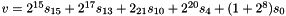 mod
mod
, then set
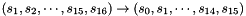
}
In the working mode, the LFSR does not receive any input, and it works as follows:
LFSRWithWorkMode() {
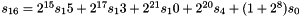 mod
, then set
}
Informative note: Since the multiplication of a 31-bit string s by over 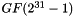 can be implemented by a cyclic shift of s to the left by i bits, only addition modulo 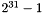 is needed in step 1 of the above functions. More precisely, step 1 of the function LFSRWithInitialisationMode can be implemented by
mod
and the same implementation is needed for step 1 of the function LFSRWithWorkMode
Informative note: For two elements 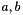 over , the computation of mod can be done by
(1) compute v=a+b and
(2) if the carry bit is 1, then set v=v+1
Alternatively (and better if the implementation should resist possible timing attacks):
(1) compute w=a+b, where w is a 32-bit value; and
(2) set v = (least significant 31 bits of w) + (most significant bit of w)
The bit-reorganization
The middle layer of the algorithm is the bit-reorganization. It extracts 128 bits from the cells of the LFSR and forms 4 of 32-bit words, where the first three words will be used by the nonlinear function F in the bottom layer, and the last word will be involved in producing the keystream
Let 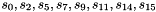 be 8 cells of LFSR as in section 3.2. Then the bitreorganization forms 4 of 32-bit words from the above cells as follows:
Bitreorganization() {
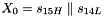
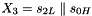
}
Note: The are 31-bit integers, so 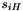 means bits 30...15 and not 31...16 of
The nonlinear function F
The nonlinear function F has 2 of 32-bit memory cells 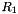 and . Let the inputs to F be and , which come from the outputs of the bit-reorganization (see section 3.3), then the function F outputs a 32-bit word W. The detailed process of F is as follows:
F ( 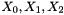) {
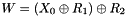
}
where S is a 32×32 S-box, see section 3.4.1, and are linear transforms as defined in section 3.4.2
The S-box S
The 32×32 S-box S is composed of 4 juxtaposed 8×8 S-boxes, i.e., S=( ), where 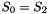, . The definitions of and can be found in table 3.1 and table 3.2 respectively
Let x be an 8-bit input to (or ). Write x into two hexadecimal digits as , then the entry at the intersection of the h-th row and the l-th column in table 3.1 (or table 3.2) is the output of (or )
The S-Box S0
The S-Box S1
The linear transforms L1 and L2
Both L1 and L2 are linear transforms from 32-bit words to 32-bit words, and are defined as follows:
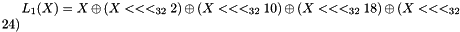
Key loading
The key loading procedure will expand the initial key and the initial vector into 16 of 31-bit integers as the initial state of the LFSR. Let the 128-bit initial key k and the 128-bit initial vector iv be
and
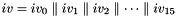
respectively, where and , are all bytes. Then k and iv are loaded to the cells of LFSR as follows:
Let D be a 240-bit long constant string composed of 16 substrings of 15 bits:
where
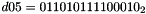
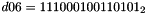
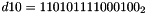
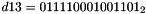
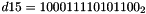
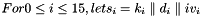
The execution of ZUC
The execution of ZUC has two stages: the initialization stage and the working stage
The initialization stage
During the initialization stage, the algorithm calls the key loading procedure (see section 3.5) to load the 128-bit initial key k and the 128-bit initial vector iv into the LFSR, and set the 32bit memory cells R1 and R2 to be all 0. Then the cipher runs the following operations 32 times:
Bitreorganization();
w=F( );
LFSRWithInitialisationMode(w >> 1)
The working stage
After the initialization stage, the algorithm moves into the working stage. At the working stage, the algorithm executes the following operations once, and discards the output W of F:
Bitreorganization();
F( );
LFSRWithWorkMode()
Then the algorithm goes into the stage of producing keystream, i.e., for each iteration, the following operations are executed once, and a 32-bit word Z is produced as an output:
All copyrights and trademarks are the property of their respective owners
The source code contained or described herein and all documents related to the source code (herein called "Material") are owned by John Peter Greninger and Sheila Rocha Greninger. Title to the Material remains with John Peter Greninger and Sheila Rocha Greninger. The Material contains trade secrets and proprietary and confidential information of John Peter Greninger and Sheila Rocha Greninger. The Material is protected by worldwide copyright and trade secret laws and treaty provisions. No part of the Material may be used, copied, reproduced, modified, published, uploaded, posted, transmitted, distributed, or disclosed in any way without prior express written consent of John Peter Greninger and Sheila Rocha Greninger (both are required)
No license under any patent, copyright, trade secret, or other intellectual property right is granted to or conferred upon you by disclosure or delivery of the Materials, either expressly, by implication, inducement, estoppel, or otherwise. Any license under such intellectual property rights must be express and approved by John Peter Greninger and Sheila Rocha Greninger in writing
Licensing information can be found at www.protocolpp.com/license with use of the binary forms permitted provided that the following conditions are met:
Redistributions in binary form must reproduce the above copyright notice, this list of conditions and the following disclaimer in the documentation and/or other materials provided with the distribution
Any and all modifications must be returned to John Peter Greninger at GitHub.com https://github.com/jpgreninger/protocolpp for evaluation. Inclusion of modifications in the source code shall be determined solely by John Peter Greninger. Failure to provide modifications shall render this license NULL and VOID and revoke any rights to use of Protocol++®
Commercial use (incidental or not) requires a fee-based license obtainable at www.protocolpp.com/shop
Academic or research use requires prior written and notarized permission from John Peter and Sheila Rocha Greninger
Use of the source code requires purchase of the source code. Source code can be purchased at www.protocolpp.com/shop
The name of its contributor may not be used to endorse or promote products derived from this software without specific prior written permission and licensing
THIS SOFTWARE IS PROVIDED BY THE COPYRIGHT HOLDER AND CONTRIBUTOR "AS IS" AND ANY EXPRESS OR IMPLIED WARRANTIES, INCLUDING, BUT NOT LIMITED TO, THE IMPLIED WARRANTIES OF MERCHANTABILITY AND FITNESS FOR A PARTICULAR PURPOSE ARE DISCLAIMED. IN NO EVENT SHALL THE COPYRIGHT OWNER OR CONTRIBUTORS BE LIABLE FOR ANY DIRECT, INDIRECT, INCIDENTAL, SPECIAL, EXEMPLARY, OR CONSEQUENTIAL DAMAGES (INCLUDING, BUT NOT LIMITED TO, PROCUREMENT OF SUBSTITUTE GOODS OR SERVICES; LOSS OF USE, DATA, OR PROFITS; OR BUSINESS INTERRUPTION) HOWEVER CAUSED AND ON ANY THEORY OF LIABILITY, WHETHER IN CONTRACT, STRICT LIABILITY, OR TORT (INCLUDING NEGLIGENCE OR OTHERWISE) ARISING IN ANY WAY OUT OF THE USE OF THIS SOFTWARE, EVEN IF ADVISED OF THE POSSIBILITY OF SUCH DAMAGE
The documentation for this class was generated from the following file: